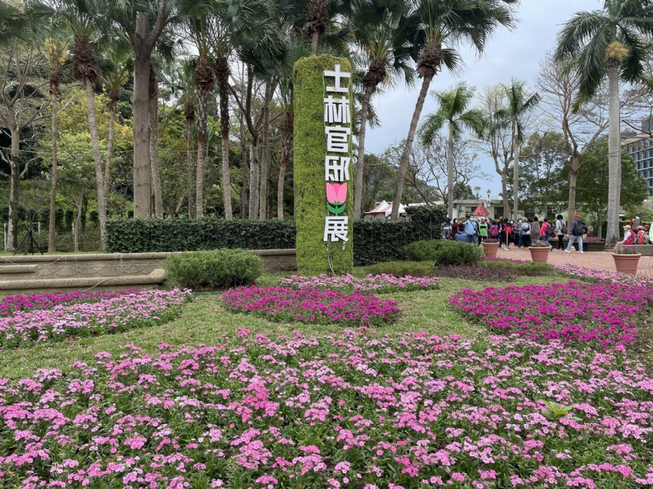

<title>景點介紹</title>
<header>
    <h1>熱門景點</h1>
    <nav>
        <ul>
            <li><a href="index.html">士林官邸</a></li>
            <li><a href="Beitou.html">北投圖書館</a></li>
            <li><a href="Maokong.html">貓空纜車</a></li>
        </ul>
    </nav>
</header>
<article>
    <section>
        <h3>景點介紹</h3>
        <p>士林官邸有精緻的庭園造景設計，蟲鳴鳥叫、景色秀麗，是休息遊憩的絕佳場所。</p>
        
        <audio controls>
            <source src="audio/士林官邸.mp3" type="audio/mpeg"/>
            瀏覽器不支援
        </audio>
    </section>
</article>
<aside>
    <h3>美食介紹</h3>
    <ul>
        <li><a href="https://newyiguan284.business.site/?utm_source=gmb&utm_medium=referral">牛易館</a></li>
        <li><a href="https://www.abao-master.com.tw/">阿寶師咖哩餃</a></li>
    </ul>
</aside>
<footer>
    <h4>&copy; 2020 - this is the footer of the website.</h4>
</footer>